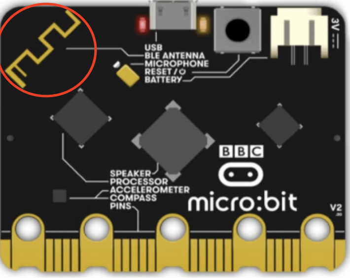
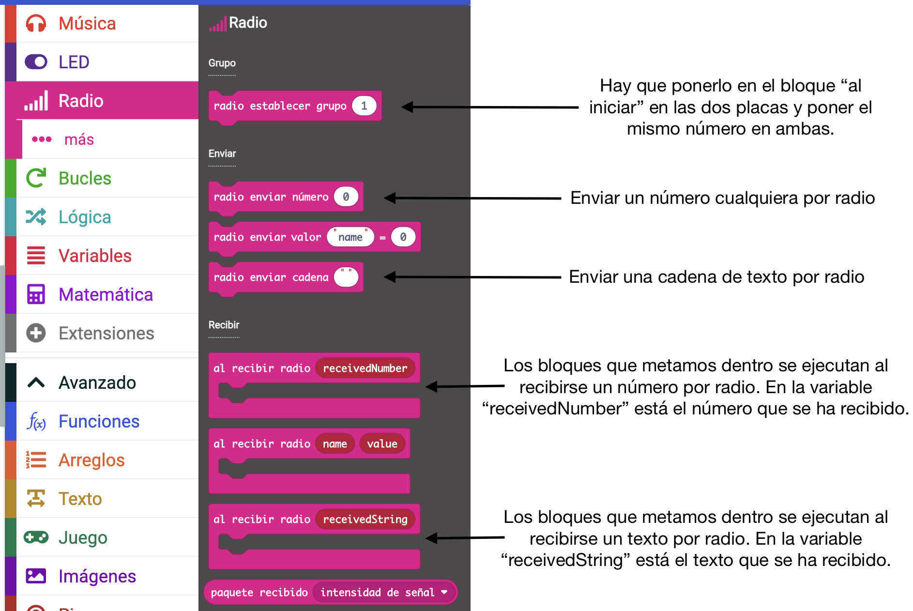
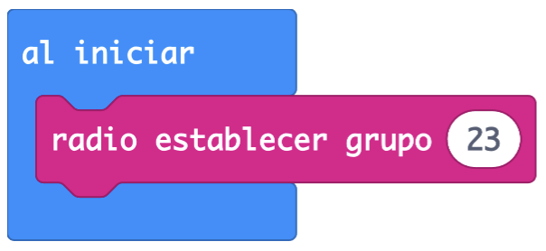
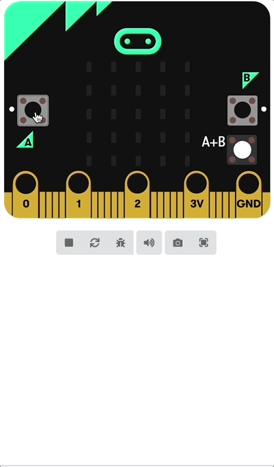
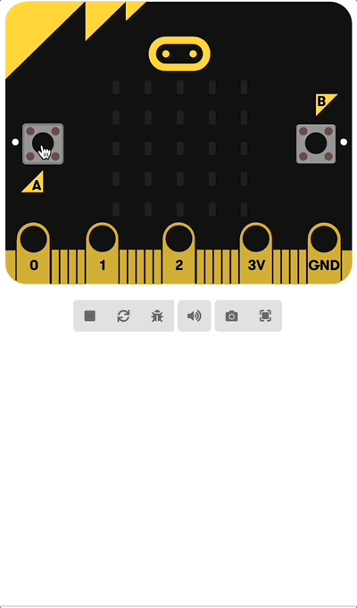

Prácticas
La comunicación por radio es un sistema de comunicación por medio de ondas que nos permiten enviar datos de un lugar a otro de manera inalámbrica.
En robótica se utiliza en sensores inalámbricos, ya que aporta diversas ventajas como la seguridad, la motorización a distancia y elimina todas las dificultades que entraña realizar una instalación cableada.
Micro:bit dispone de una antena que nos permite enviar y recibir datos de manera inalámbrica por medio de ondas de radio. La antena, que sirve tanto para radio como para bluetooth, la puedes ver en la parte trasera de la placa. Aquí te la muestro en un círculo rojo:

Esto nos permite comunicarnos con otras placas Micro:bit. En este vídeo tienes una explicación de en qué consiste esto. Puedes activar los subtítulos en español:
Para comunicar dos placas entre sí, tenemos disponibles una serie de bloques en MakeCode, en la categoría "Radio". En la siguiente imagen te explico para qué sirven los más importantes, que serán los que tengas que usar en esta tarea:

El bloque establecer grupo es el que indica a MakeCode que vas a usar la radio. Lo tienes que poner en las dos placas que se vayan a comunicar, y con el mismo número en ambas, para que se escuchen. Por ejemplo:

Te preguntarás, ¿cómo voy a poner ese código en dos placas, si en MakeCode solo tengo una? La respuesta es que, si añades cualquier bloque del tipo radio enviar a tu programa, automáticamente te aparecerá otra placa virtual en MakeCode cuando se envíe algo por radio. El código que tengas en tu proyecto se ejecutará en las dos placas a la vez.
Como siempre, haremos unas prácticas primero para que aprendas a usar los bloques y a simular la comunicación entre placas virtuales en MakeCode.
Práctica 1 - Envía tu logo
En esta práctica escribiremos un programa para que se comuniquen dos placas por radio de la siguiente manera:
- Si pulsamos el botón "A" en una placa, aparece en la otra la letra "A".
- Si pulsamos el botón "B" en una placa, aparece en la otra la letra "B".
- Si pulsamos los botones "A" y "B" simultáneamente, aparece en la otra placa un icono determinado (puedes usar el que quieras, no hace falta que sea el que te pongo yo aquí)
Aquí tienes una demostración del funcionamiento del programa:

Con lo que has aprendido hasta ahora, es posible que seas capaz de escribir el programa tú solo/a. Inténtalo y, si tienes dudas, aquí tienes una posible solución:

Práctica 2 - Sensores inalámbricos
En esta práctica vamos a imaginar que tenemos una placa micro:bit para medir la temperatura y el nivel de luz en un recinto y queremos enviar los valores a otra placa que tenemos en clase para ver esos valores en su pantalla. El programa debería hacer lo siguiente:
- Si se pulsa el botón "A" en la placa sensora, se debe enviar la temperatura por radio para que la muestre la otra en su pantalla.
- Si se pulsa el botón "B" en la placa sensora, se debe enviar el nivel de luz detectado para que la muestre la otra en su pantalla.
- Para saber qué es lo que estamos viendo en la pantalla, hay que añadir al número una letra "T" delante si muestra la temperatura y una "L" delante si muestra el nivel de luz. Para unir textos, puedes usar un bloque que se llama unir y que puedes encontrar en la categoría "Texto" (asegúrate de tener desplegado el menú "Avanzado" para ver esa categoría en MakeCode)
El funcionamiento sería el siguiente (la placa de arriba es la placa de sensores y la de abajo es la receptora que muestra la información)
Como siempre, te dejo una posible solución por si tienes problemas: